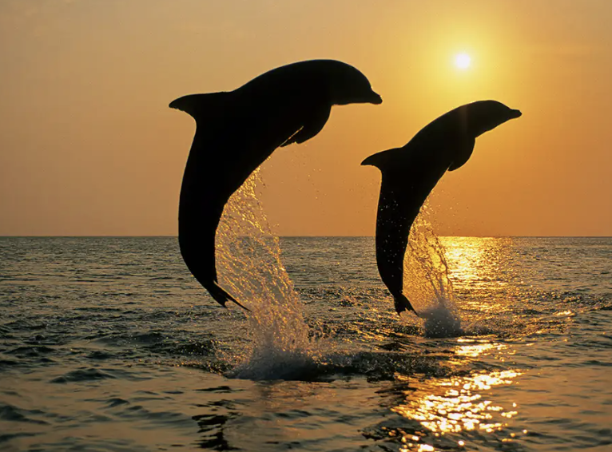

<!DOCTYPE html>
<html>
  <head>
    <link rel="stylesheet" href="new.css">
  </head>
  <body>
    
  </body>
</html>

<h1> More information on dolphins </h1> 


<p>(Design Pics Inc/Alamy Stock Photo)</p> 

<ul>
  <li>there are 42 dolphin species which are grouped into five families: the oceanic dolphin family is by far the largest with 38 members</li>
  <li>there are eight dolphin names that feature the word ‘whale’, including pilot whales, killer whales, false killer whales and melon-headed whales.</li>
  <li>Dolphins live in the world’s seas and oceans and in some rivers too. Some dolphin species prefer to live in coastal areas, others like shallow water but prefer to live away from the coast close to patches of shallower water which are located further out to sea.</li>
  <li>Orcas are the only dolphins which live in the Arctic and Antarctic. Their large size means that they have more protection against the harsh cold of the freezing seas. </li>
  <li>River dolphins such as the Amazon River dolphin (boto) and Ganges river dolphins live their lives only in fresh water rivers and lakes, a long way from the ocean; they are sometimes known as the ‘true river dolphins’. </li>
</ul>